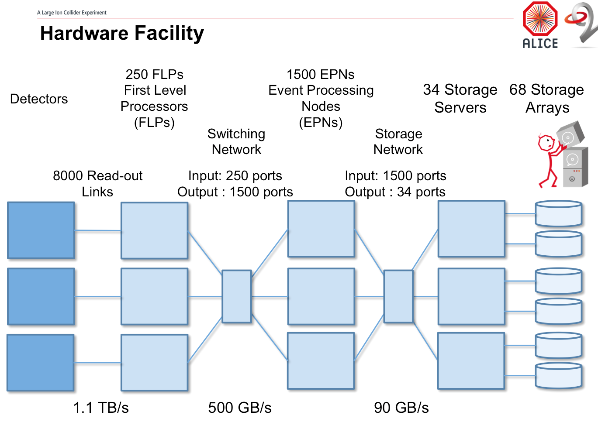

ALICE MUON Cluster finder
Thesis update
Created by Sean Murray / @bazinski
Nominal pp event

Nucl.Phys. A862-863 (2011) 223-230 arXiv:1102.2071
Nominal PbPb event

O2 upgrade
MUON Reconstruction
| Operation | Relative Time [%] | notes |
|---|---|---|
| raw data decoding | 4 | |
| raw data filtering | 2 | ? |
| Pre Clustering | 10 | after fixup |
| Clustering | 63 | |
| Tracking | 7 | ? |
| MID Tracking | 6 | ? |
| MCH-MID Matching | 8 | ? |
Why do we care
We all love cluster finding, its the most critical part of the experiment.
O2 requires online to have physics quality. Offline must move to online.
MUON needs c. 100x speed up.
Maximum Likelihood Expectation Maximization (MLEM)
Current cluster finder algorithm of choice.
Used heavily in medical imaging.
Originally tuned for 8k particles in each event but we only have 2k.
The basic Algorithm
An (EM) algorithm is an iterative method for finding maximum likelihood or maximum a posteriori (MAP) estimates of parameters in statistical models, where the model depends on unobserved latent variables. The EM iteration alternates between performing an expectation (E) step, which creates a function for the expectation of the log-likelihood evaluated using the current estimate for the parameters, and a maximization (M) step, which computes parameters maximizing the expected log-likelihood found on the E step. These parameter-estimates are then used to determine the distribution of the latent variables in the next E step.
MLEM
Expectation step (E step) : the formula expressing the likelihood of any reconstructed cluster given the measured data is formed (Poisson noise)
Maximisation step (M step) : the cluster elements that has the greatest probability to give the measured data is found.
- various sundry optimisations std cpu to gpu
- projection and backprojection pipelined.
Currently x3 speed, have not bothered to extend to physics, its too poor as it is, in search of another x97.
adding pads
- precluster kind of like a threshold, providing array of active pads
- precluster provides array of
- find regions of interest for clusters
- Add virtual pads if neccessary ?? Somehow critical
- Is cluster splittable
- loop on mlem reducing pixel size until sufficiently small, see performance of loop iteration per data dataset. REDO graphs
- calc COG
The Options
What are the options
Optimise current algorithm
Merge tracking and clustering reject bad clusters
Modify current Algorithm (gpu/fpga)
New algorithm
Merge tracking and clustering
New Algorithm, Other detectors
Why be brave, see what the other detectors did
TPC very very different, tried but no
ITS does not port to us
Start from scratch
Currently here, learning machine learning, and playing around.
Building a pipeline of custom offline code to do reconstruction from raw to aod to analysis, 1600 cores at chpc.
TO DO
- Get RAW data of previous analyses.
- Newer GPU for new compute engines.
- Alternative Machine Learning.
- Investigate the combined Tracking/Clustering option